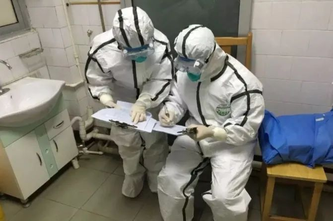
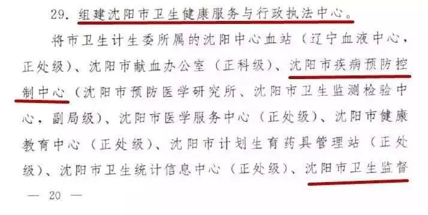
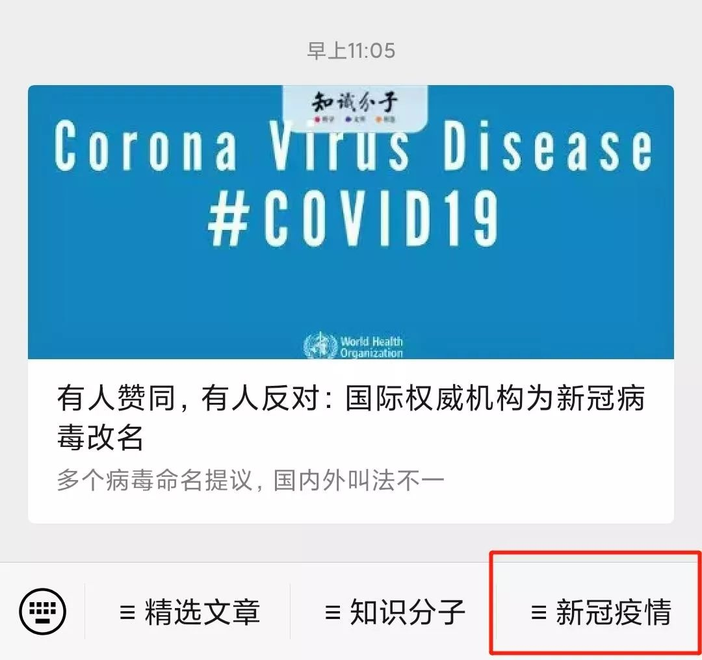

中华预防医学会专家组：“拐点并不是黎明前的黑暗，只相当于夜里12点”
原文链接 备份链接 “疾控要像消防一样，在疫情处置中有决定权、处置权”从大年初六（1月30日）开始，中国疾控中心首任主任、北大公共卫生学院教授李立明再次“出山”，带领一批国内公共卫生领域的骨干们集中办公。他率领的这个团队的名字叫“中华预防 …

基层流调人员的日常工作，图片来自济南日报
撰文 | 叶水送
责编 | 陈晓雪
● ● ●
在新冠肺炎疫情得到基本控制后，鲁风（化名）在连轴工作了一个半月后终于第一次回家。“从年前在单位待命开始到最近部分人员恢复正常上下班，这期间没白天黑夜，作息打乱，经常半夜出去流调，神经高度紧张，现在明显感觉身体不支。”
鲁风是国内东部一个区县疾控中心的基层职员。自新冠疫情爆发以来，其所在的辖区有不少武汉输入病例，加上被输入病例感染的本地人员，前后总共有五六十名确诊患者。地方基层疾控中心平日的工作就让他们忙得脚不着地，新冠肺炎疫情的降临，更让他们的工作压力短时间内倍增。
目前，全国拥有3500个各级疾控中心，从国家到地方，共分四级疾控体系（国家、省、市，以及县级疾控中心）。像鲁风这样的来自地方疾控中心的基层疾控中心人员，全国有19万之众。新冠疫情爆发后，从湖北或武汉出来的、流散在全国各地人口高达500万，这些人去往何处、哪些人是低风险、哪些人是高风险，哪些人同疑似感染者或确诊患者有密切接触，如此庞杂的流行病学调查工作，基本落在了鲁风这样的基层流调人员身上。
然而在新冠肺炎疫情爆发之前，各地方疾控中心不被重视。2019年医疗卫生系统的改革，多地疾控中心被撤销，人员分流。“本来我们已经做好了随时被撤销，并入其他单位或成立新单位的准备，没想到来了这么大的疫情。我们差点就要改没了。”鲁风说。
加上此次疫情早期，国家疾控中心（CDC）因 “为何不提早拉响警报”、“在疫情早期研判上为何说出有限人传人”，一时间成为舆论的众矢之的。而在疫情防控和流行病调查方面的基层疾控人员，几乎在公众面前 “消失”。实际上，他们一直身处前线，担负着疫情 “侦察兵” 的角色。
疫情防控就是抢时间
在疫情期间，流调工作可能随时会出现，而且现场流调结束后需要24小时内尽快出调查报告。“报告一写就是几小时，熬夜通宵是家常便饭。”鲁风说，“疫情防控就是抢时间，工作繁重，人手缺乏，所以晚上的时间都要利用起来，整个单位员工熬夜的情况都很常见，疾控中心领导层在疫情期间也基本都在熬夜。”

1月30日深夜某疾控中心依旧灯火通明，图片来自南通发布
所谓的流调是流行病学调查的简称，指疾控人员到疫情现场开展调查，与患者交流，询问其在发病前后的一些暴露情况、接触情况以及活动轨迹、就医情况，以寻找与传染源、传播途径和密切接触者有关的线索。
鲁风所在的辖区大多数感染者来自武汉，即使是本地病例也都是曾与武汉返乡的患者密切接触感染的。“这些病例都与武汉相关，在所有武汉返乡人员及其密切接触者都被一一排查过后，所有出现相关症状和新冠病毒核酸检测阳性的患者都被应收尽收，应治尽治，现在也没有新病例出现了”，鲁风表示，“目前我们防控的重点是，国外输入性的病例”。
疫情初期，行动“被动”
早在2019年年底，国内就有媒体报道不明原因肺炎，作为地方疾控中心一线人员自然不会忽略这些信息。鲁风所在的疾控中心在去年12月就一直在关注这次疫情。虽然有心备战，一切又显得非常被动：疾控中心长期的角色问题，让他们只有接到上级通知后才能行动。
“我们虽然关注新冠肺炎疫情，但所在辖区无病例、上级无通知，只能待命。” 鲁风说。而所谓的备战，也主要是信息收集和物资储备，以及开展相应宣传和培训。
为何一直处于备战待命状态？鲁风也提出了他的看法：“疾控的独立性很差，因为疾控是属于卫健委下属事业单位，卫健委又是政府的一个部门，长期养成的惯性和墨守成规的法则，所以地区疾控工作的步调基本是跟地方政府一致的。”
对于基层疾控人员来说，即使没有新冠疫情，他们一年到头也基本都在抗疫阵线上，平时处理的各类疫情，可能大多数不为大众和媒体所知。鲁风说，疾控中心下面有很多个科室，负责传染病监测的只是其中一个科室，只要医疗机构上报，他们就要在第一时间开展流行病学调查以及相应处置工作。
除了疾控的日常工作，辖区内严重精神障碍患者的管理工作也由疾控中心承担，“很多人估计不可思议，这工作怎么会跟疾控扯上关系，我们也有些不解，但可能是这些工作找不到相应更专业的机构承担，就让疾控中心来承担起来了吧。” 鲁风表示。
1月20日，钟南山提出新冠肺炎出现了人传人现象；同日，国家卫生健康委员会将新冠肺炎纳入乙类传染病，并采取甲类传染病的预防、控制措施，同时将新冠肺炎纳入规定的检疫传染病管理中来。此时鲁风所在的疾控中心才正式开始应对新冠肺炎疫情。其所在的地方政府立即成立了疫情防控办公室。“我们是1月21日省市区三级开过会后基本全面动员了”，鲁风表示，“疫情防疫办公室设在地方卫健委，主要以地方行政机构主要领导牵头，当然成员也包括市区两级疾控中心领导。”
随后，当地的防控办公室开始下发一系列文件和指导性方案，不断召集各乡镇机关开会，在全区开展相应宣传工作；之后，又对所有武汉和湖北返乡人员开展摸排登记工作，逐渐关闭辖区所有公共营业场所，疾控中心也派出人员对为保障民生而未关闭的超市等公共场所开展疫情防控及消杀指导工作，并要求各医疗卫生单位做好防护，规范开设发热门诊。
这时候，基层的疾控人员工作更繁忙了，除了常规的信息收集、物资储备、人员培训以及居民宣教外，还增加了流行病学调查、消杀、封锁、疫情研判等工作。“我们需要在单位待命，不能回家，”鲁风回忆道。由于疫情期间，所有餐馆都关闭了，在岗人员的吃饭成了问题，好在他们单位解决了这些问题。
新冠疫情期间，除非涉及患者生命的工作，地方疾控中心的常规工作停滞，鲁风和同事把所有的精力都投入在了抗击新冠疫情上。鲁风说，这次疫情基层疾控基本都全员在岗，全部参与。“县区级疾控配备一般都是50到100人之间，我们单位也是，即使这样人手也不够，于是只能从其他相关机构借人。”
疫情中的“侦察兵”
在应对此次新冠肺炎疫情上，地方疾控、政府以及医院如何相互配合和分工，鲁风他们的主要工作是什么？鲁风介绍，地方疾控中心是“侦察兵”，主动出击，为政府献言献策，发现病例关联线索及时上报，尽快管理与病例密切接触的人群，开展消杀，为后续部队的进入开辟道路，而地方政府如同“将军”，是战场上的指挥者、领导者，统筹全局，医院则如同 “士兵”，收治病例并进行治疗，他们参与抗疫的队伍当然也最为庞大。

疫情中的基层疾控人员现场进行流调。图源来自南通发布
当所在辖区出现疑似病例时，医疗机构会报送至疾控中心，然后疾控中心人员第一时间进入病房与患者交流，获悉患者的基本信息、发病、诊疗经过及临床表现、患者发病前14天居住和旅行史、可疑暴露史、接触者的情况等相关信息，以及开展咽拭纸采样工作。
这些工作完成后，他们需要在24小时内完成这名患者的调查报告与研判工作，以便提出下一步疫情防控工作建议。“一名患者的全套流程下来几乎要持续一天的时间，工作量巨大，这也是疾控工作最危险的地方，因为多数疑似患者最后可能都会确诊，如果我们在面对被感染的患者几个小时的过程中，防护不到位或者出现防护意外，那被感染的可能性很大。”鲁风表示。
尤其是在疫情早期，对病毒缺乏全面了解的情况下，如何做好自身防护，也无参考指标。《知识分子》问鲁风有没有担心自己被感染，他表示，“一直担心自己被感染，所以一直没与家人见面，都睡在单位”。
所幸的是，鲁风所在的疾控中心无工作人员感染新冠肺炎。“但如果病毒再烈性一些，可能会有，烈性病毒能穿透二级防护，出现人员牺牲，我们也肯定是最先牺牲的一批公职人员”。鲁风打趣道。
在流调过程中，也有很多令鲁风难忘的时刻。“大多数患者被定性为疑似甚至被确诊后不少人心情很压抑，甚至有人得知消息时一下子就晕倒，还有人平平淡淡无所谓，什么样的都有，但肯定是以悲观的为主，曾经有一个刚生过孩子的女患者，得知检测阳性时，立马就哭了，说我小孩刚出来，不能以后没有妈妈。我们当时能做的只是极力安慰。”
基层疾控中心举步维艰，
“差点就改没了”
基层疾控人员工作内容繁杂，压力大，相应的人力物力也很不到位，因此离职率很高。事实上，这与疾控中心近年来不断被边缘化、不被重视有关。


2018年，沈阳市对当地疾病预防控制中心进行改革
2018年，沈阳市疾病预防控制中心、沈阳市卫生监督所等单位整合为沈阳市卫生健康服务与行政执法中心，为市属卫生计生委所属事业单位，不定机构规格。2019年，医疗卫生系统大力推进改革，全国多地疾控中心被撤销，人员被分流。
“本来我们已经做好了随时被撤销，并入其他单位或成立新单位的准备，没想到来了这么大的疫情，下一步怎么改，我们也不知道，我们差点就要改没了”。鲁风说。
而在2003年“非典”之后，全国各级疾控中心的体系建设不断完善，投入也在加大。但自此之后，疾控系统的改革不仅停滞，疾控中心还不断地被边缘化，直接后果就是疾控中心不仅地位低，不被重视，投入也大幅下滑。根据中华预防医学会新型冠状病毒肺炎防控专家组最近在《中华流行病学杂志》介绍，2014年国家 “公共卫生专项任务经费” 的项目拨款为5.29亿，而到了2019年这笔预算下降到4.5亿，同比下降14.9%。
专家组还认为，近些年来疾控中心的改革一直在走下坡路。2009年，启动的新一轮医疗体制改革，忽略了公共卫生的重要性，疾控中心推行的绩效工资改革，最终演变成新一轮的大锅饭，严重挫伤了疾控人员的积极性，导致专业人才大量流失。2017年4月，疾控中心作为公益一类事业单位的 “预防性体检收费” 等3项收费还被取消，从此基层疾控彻底没有任何收入来源，全靠地方政府拨款，然而大部分地区财政保障不到位，机构运转举步维艰。
此前钟南山院士也向媒体呼吁，疾控中心的地位低，独立性差，由此导致他们难以在第一时间将疫情的研判声音传递出去。实际上，目前国内疾控系统还存在离职率高，人才难以吸引等问题。
“我所在的学校公卫学科排名一直居于全国前列，但同学进疾控的非常少，我这一届毕业的大概只有10%的同学进入疾控系统，有同学毕业后做生意去了，还有同学去当城管。” 鲁风表示，要想留住人，不仅应该提升疾控中心的地位，还 “应该健全预防医学执业资格，健全疾控防治体系，提高疾控机构收入水平。” 
参考资料
3.关于疾病预防控制体系现代化建设的思考与建议.中华流行病学杂志. 2020. DOI：10.3760/cma.j.cn112338-20200225-00166.

进入知识分子公众号
点击菜单栏【新冠疫情】获取更多文章
制版编辑|皮皮鱼

点击阅读原文，查看知识分子网站“聚焦新型冠状病毒”专题。
原文链接 备份链接 “疾控要像消防一样，在疫情处置中有决定权、处置权”从大年初六（1月30日）开始，中国疾控中心首任主任、北大公共卫生学院教授李立明再次“出山”，带领一批国内公共卫生领域的骨干们集中办公。他率领的这个团队的名字叫“中华预防 …
原文链接 备份链接 流调的目的是获取被调查者的发病史、旅行史、接触史等信息，为分析疫情的传播路径、控制疫情进一步传播提供关键的依据。 记者 | 王 煜 交接完标本、脱下一整套防护装备，上海长宁区疾控中心的两名年轻的工作人员杨雨帆和蒋亭安走 …
原文链接 备份链接 上周完成了本公众号第一篇采访稿：波兰，浴火重生之地（上），昨天完成了本号第一个译稿：西班牙 COVID-19 : 我“宅”在瓦伦西亚的第一天（译文），热烈庆祝本号今天迎来第一篇投稿！ 有希腊的朋友投稿或接受采访吗，集齐 …
原文链接 备份链接 荷兰人平时看起来甚至有些淡然，不像南欧人那么热情浪漫。但到了需要帮助别人的时候， 一般都会尽力而为，不带附加条件。 文 | 王巧丽 正视新冠病毒的第一天 晚上7点钟， 荷兰人守在电视机前， 等着首相马克·吕特讲话。 …
原文链接 备份链接 湖北现有疑似清零。多省发现回国人员中存在无症状感染者，“外防输入”形势仍然较为严峻。美国新增迅速逼近2000例。美、韩均计划直接向民众发放现金以度过困难时期 文 |《财经》数据研究员 徐进 图 |《财经》视觉中心 编 …